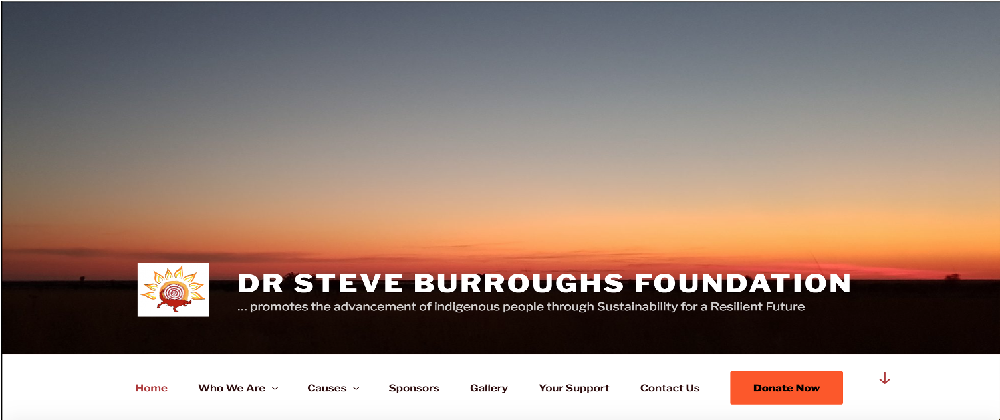

Zhiyu Cao (曹芷毓) |
Profile
- I am a second-year postgraduate student in ANU working on Master of Computing.
- At the beginning, I was born in Shenyang,Liaoning.
- If you have any projects related to networking or data mining, please contact me. I'm always willing to get involved in.
Research Interest
At this stage, I am mainly interested in two aspects of research. One direction is the networking direction. I think the current 5G are emerging technology, and future development will be based on the 5G platform. The rapid development of 5G will drive LoT technology to become more mature. During my undergraduate and graduate studies, I have learned a lot of network knowledge. I have also tried to use java or python to crawl web pages. There is also the use of python to detect the network. I am also very interested in network security, but I still have no chance to learn this knowledge.Another interesting direction is data mining, and I also like data mining related projects very much. I used the SQL language to operate the database in my undergraduate course. In the process of graduate study, I have specifically studied data wrangling and data mining. I can use python to pre-process the data and can also use Rattle for data analysis.
Education
- 2015.12-2018.12 Undergraduate in Univeristy of South Australia , UNISA.
- Coursework in UNISA: Bachelor Transcript
- 2018.12-Current Postgraduate in College of Engineering and Computer Science , ANU.
- Coursework in ANU: Structured Programming (Java), Logic(Inference of Computer Internal Algorithms), Software Construction(using Java in Android Studio developing), Art and new media(JavaScript), Relational Database(SQL), Computing Project(Final year Project) Data Mining, Computer Network, Discrete Mathematical Models, Data wrangling, Python
Publications
- No publications yet.
Projects
- DR STEVE BURROUGHS FOUNDATION WEBSITE 
- Camera calibration&homography
- Harris corner&K-means segmentation&PCA faces
- IQ-focus game
- Android voting App
Some projects are quite naive, many projects are job or assignment requirements, and here are just some running effects (code not included).
I hope you can have a better understanding of me
Please click the image for detailed information


Services
Membership:
- IEEE Student Member, 2020-Now
Skills
- Programing Language Proficient in Java,Matlab.
- Tools NumPy,Pytorch,Git,LaTeX.
- Language English (Fluent), Madarian(Native).
Familiar with Haskell,Python,R,CSS,Html,Assembly(ARMV7).